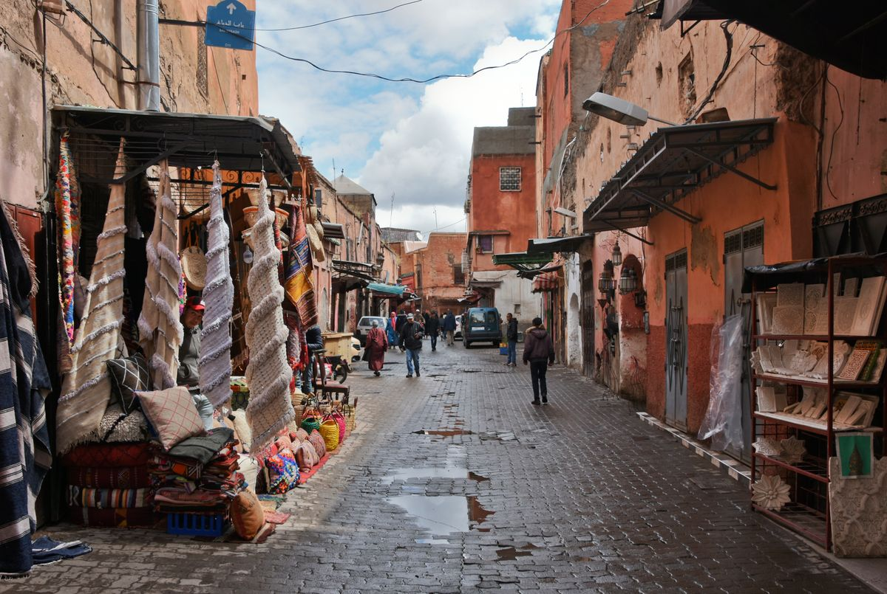
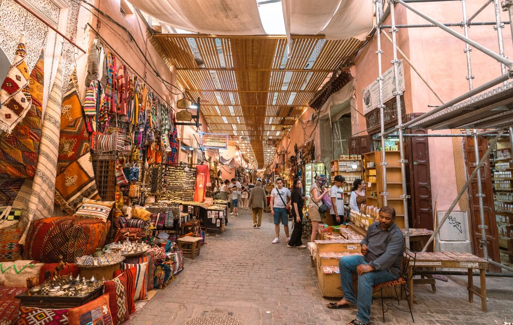
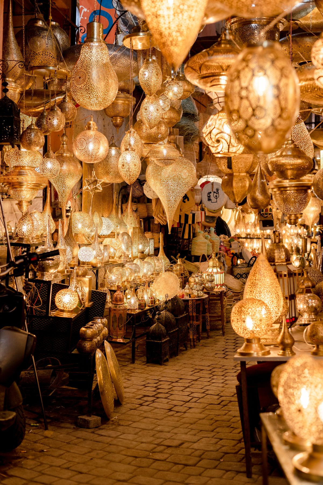

A Cidade Vermelha e os Riads majestosos.
Marrakech atiça e desorienta os sentidos, tecendo aromas profundos de especiarias e cores berrantes dentro da sua majestosa e confusa teia de ruelas de ocre ardente. Março a maio e setembro a novembro trazem o calor no ponto certo pra explorar a medina a pé e ainda fugir pro deserto próximo sem sofrer com temperaturas extremas.
Longe da cacofonia, descobre-se uma intimidade inimitável e secreiente guardada: palácios suntuosos erguidos no limiar do deserto que guardam silêncio, água corrente, arte zellige e um perfume que acalma a mente.
O luxo na medina antiga obedece ao padrão introspectivo. Fachadas pesadas de barro ocultam portões entalhados que se abrem para o paraíso andaluz: jardins aromáticos labirinticos e piscinas retangulares cobertas de tapeçaria.
Diferente da tajine de praça, nosso convite reside nos complexos temperos seletos do cordeiro de cocção lentíssima de 24 horas. Chefs particulares orquestram baquetes opulentas em tetos estelares dominando pimentões e açafrão persa.
Perder-se por becos de tecelões sem a guia especializada significa agonia; contudo, adentrar nas lojinhas junto a mestres curadores significa acesso direto e privilegiado à origem dos tapetes mais raros, arandelas puras e laticínios artesanais sem estresse comercial.
O charme de Marrakech amplia-se combinando uma escapada breve ao Deserto adjacente de Agafay. Observar camelos pastando deitados e desfrutar do amanhecer num tenda nômade majestosa selada do vento em plena aridez lunar, regada a chás de mente.


